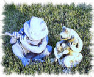

While the McKenzie Duo have hundreds of songs and pieces in their repertoire, here is a
brief list of some of the most requested and most popular. You can download a Word document

containing the complete list. You can click to listen to a selection
where you see the icon.
| Processionals and Recessionals
For entry and exit of the bridal party.
|
| Air on the G String | Bach |
| Bridal Chorus from Lohengrin ("Here Comes the Bride") | Wagner |
| Alla Danza (Hornpipe) from the Water Music | Handel |
| Arrival of the Queen of Sheeba | Handel |
| Canon in D | Pachobel |
| Jesu, Joy of Man's Desiring | Bach |
| Le Rejouissance | Handel |
| Ode to Joy | Beethoven |
| Rigadon from the Water Music | Handel |
| Rondeau (Masterpiece Theater Theme) | Mouret |
| Spring (from the Four Seasons) | Vivaldi |
| Trumpet Tune | Purcell |
| Trumpet Voluntary | Purcell |
| Rondo | C.P.E.Bach |
| Prelude / Postlude
Mood music for guests before and after the ceremony. |
| Claire De Lune | DeBussy |
| Entr'acte, from Carmen | Bizet |
| Menuet, from L'Arlesienne | Bizet |
| Notturno | Borodin |
| Pavanne | Faure |
| Sheep My Safely Graze | Bach |
| Siciliano | Bach |
| Sleepers Awake (Wachet Auf) | Bach |
| Special Music / Meditations
For special parts of the wedding ceremony, such as seating of parents and
grandparents, candle lighting, etc.
|
| One Hand, One Heart (from West Side Story) | Bernstein |
| Meditation (from Thais) | Massenet |
| Sicilienne | von Paradies |
| The Swan | Saint-Saens |
| Celtic and Irish
Celtic and Irish music sounds partically wonderful when played by flute and guitar. |
| Danny Boy (Londerry Aire) | (trad) |
| The Dew on the Grass | |
| Give Me Your Hand | O'Carolan |
| Hewlett | (trad) |
| Star of the County Down | (trad) |
| Standards
Timeless favorites, as popular today as yesterday. |
| Ain't Misbehavin' | Waller & Brooks |
| Blue Moon | Rogers/Hart |
| Days of Wine and Roses | Mancini |
| Don't Get Around Much Anymore | Ellington |
| Love is Here to Stay | Gershwin |
| Night and Day | Porter |
| Since I Fell For You | Johnson |
| Summertime | Gershwin |
| What a Wonderful World | Weiss/Thiele |
| When I Fall In Love | Heyman/Young |
| World Music and New Age
|
| Afro-Cuban Lullaby | (Trad.) |
| Caliente | Christopher Caliendo |
| Danza Venezolan | (Trad. Venezuela) |
| Guarya | (Trad. Brasil) |
| Histoire Du Tango (History of the Tango) | Piazzolla |
| Incense | Lohengrin |
| La Palomita | (Trad. Chile) |
| Milonga Tradicional | (Trad. Argentina) |
| Suite in Spanish Style | Castle |
| Renasciemento | Christopher Caliendo |
| Classical Favorites
Some of the world's best-known classical pieces. |
| Eine Kleine Nachtmusik | Mozart |
| Gavotte | Gossec |
| Gymnopedie I | Satie |
| La Fille Aux Cheveux De Lin (Girl with the Flaxen Hair) | DeBussy |
| Largo from Xerxes | Handel |
| Minuet | Boccherini |
| Musette | Bach |
| Pavane Pour Une Infante Defunte | Haydn |
| Pomp and Circumstance | Elgar |
| Serenade, from String Quartet op 3 | Haydn |
| Traumerei | Schumann |
| Show Tunes
Broadway musical and movie hits. |
| All I Ask of You | Phantom of the Opera |
| Beauty and the Beast | Beauty and the Beast |
| Can You Feel the Love Tonight? | The Lion King |
| Cavatina | The Deer Hunter |
| If Ever I Would Leave You | Camelot |
| Music of the Night | Phantom of the Opera |
| My Heart Will Go On | Titanic |
| On My Own | Les Miserables |
| Till There Was You | The Music Man |
| Where Is Love? | Oliver |
| The Wind Beneath My Wings | Beaches |
| Popular and Folk Music
The best hits of today and yesterday |
| And I Love Her | Beatles |
| Barbara Allen | (Trad.) |
| Bourree | Jethro Tull |
| Here, There and Everywhere | Beatles |
| Lovers Waltz | Ungar |
| Norwegian Wood | Beatles |
| Scarborough Fair | (Trad.) |
| Today | John Denver |
| Early and Elizabethan Music
Very elegant when played on flute and guitar.
|
| Almain | Morley |
| Fayne Would I Wedd | Farnaby |
| Greensleeves | (Anon.) |
| It Was a Lover and His Lass | Morley |
| Kemp's Jig | Dowland |
| My Lord Willoughby is Welcome Here | (Anon.) |
| Sellinger's Round | Byrd |
| What If I Never Speede | Dowland |